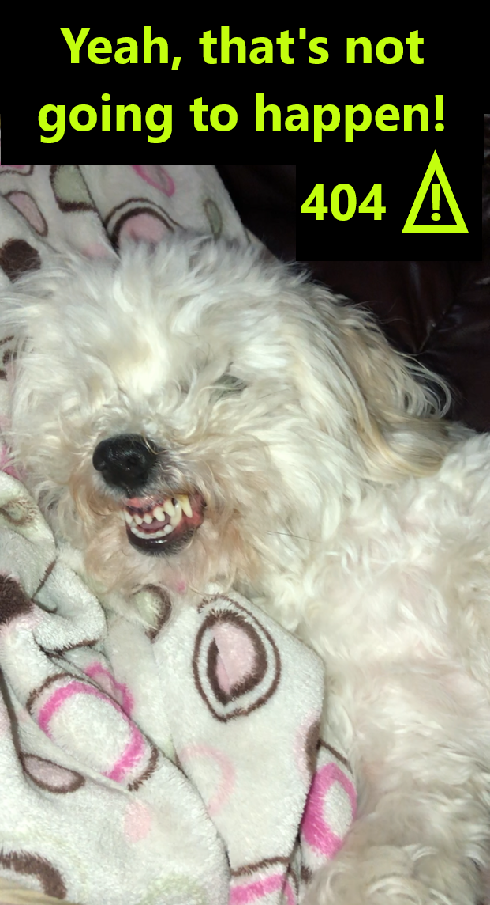

<div fxLayout="column" fxLayoutAlign="center center" class="main-container">
    <div fxFlex="15" class="nav-container">
      <nav>
        
          <!-- navbar container -->
          <div class="navbar-container" fxFlex>
            <!-- logo -->
              
              </div>
              
              </nav>
              </div>
              
              <div fxFlex fxFlexAlign="center center">
                <div>
                <button mat-raised-button color="accent" routerLink="/">Return home</button>
                </div>
              </div>
            
            
